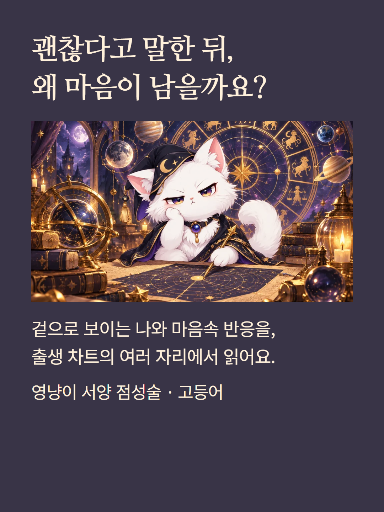
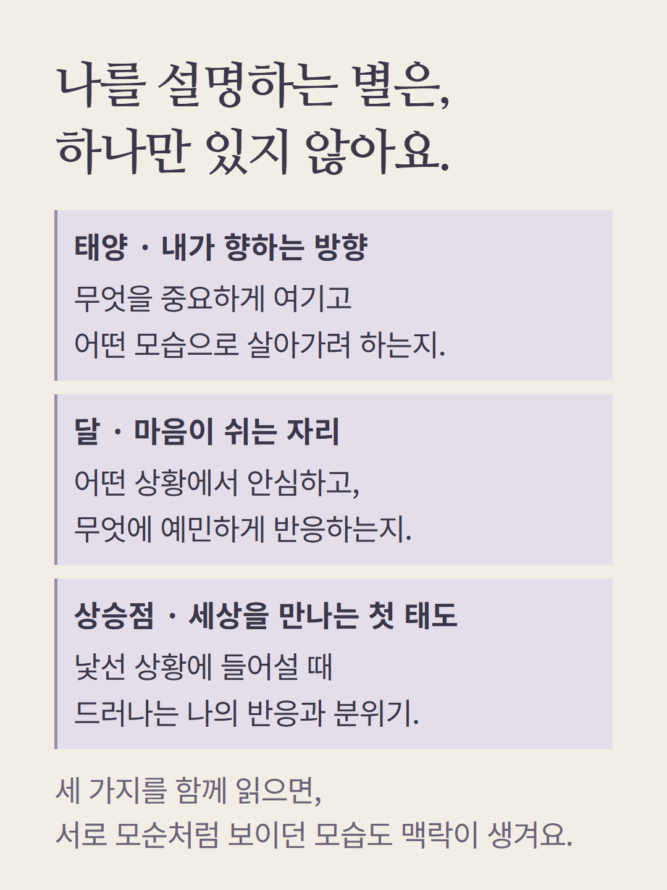
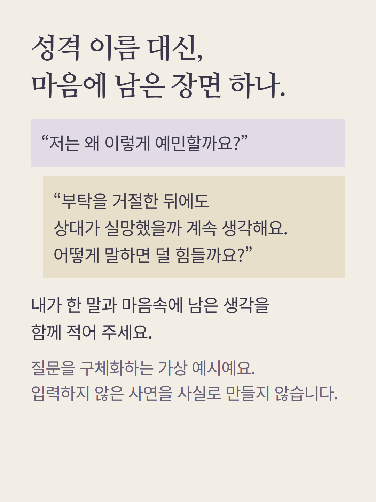
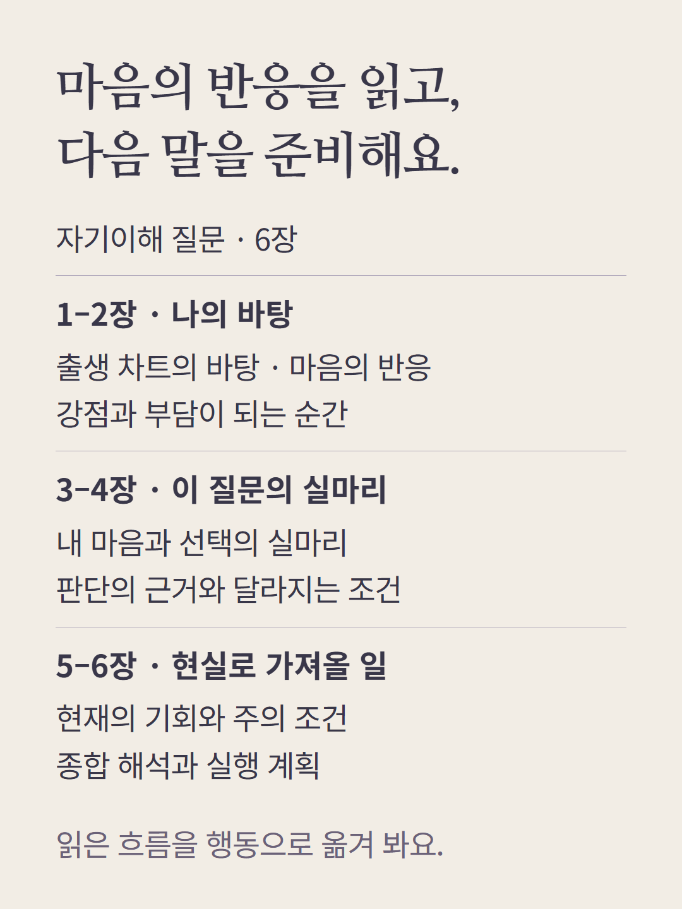
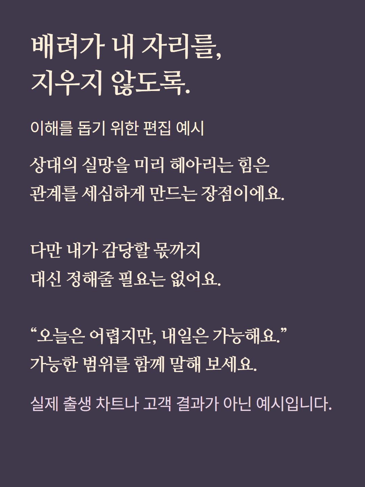
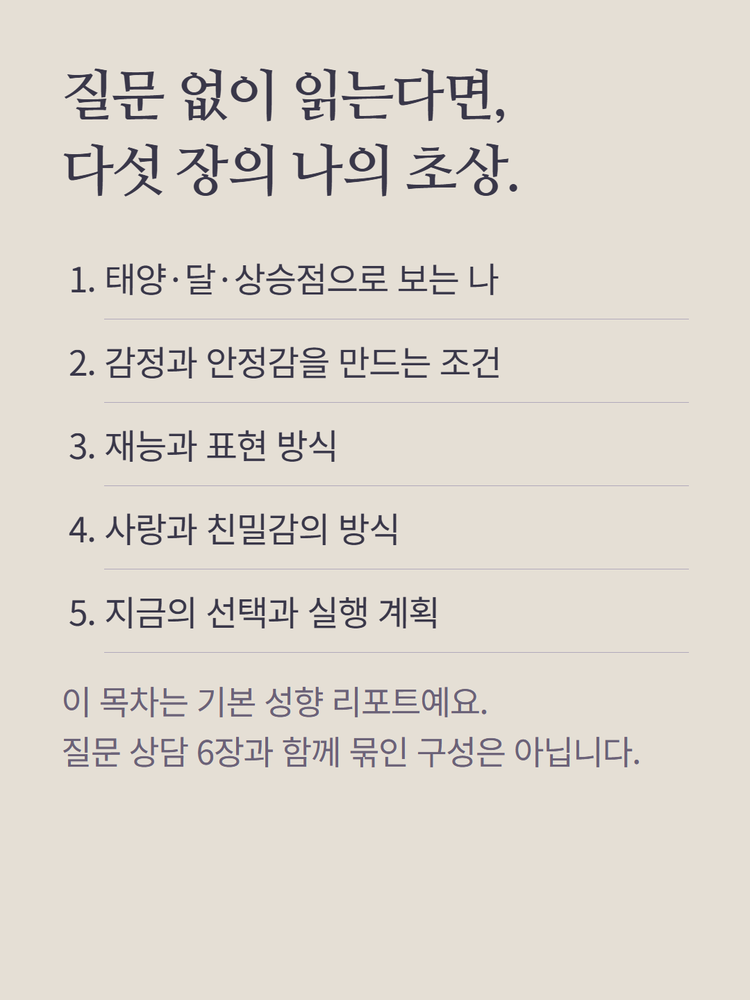
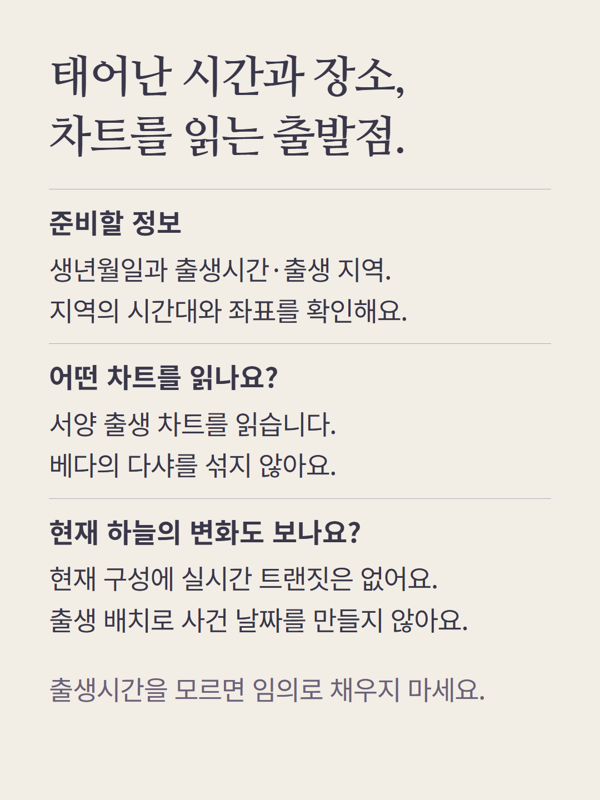
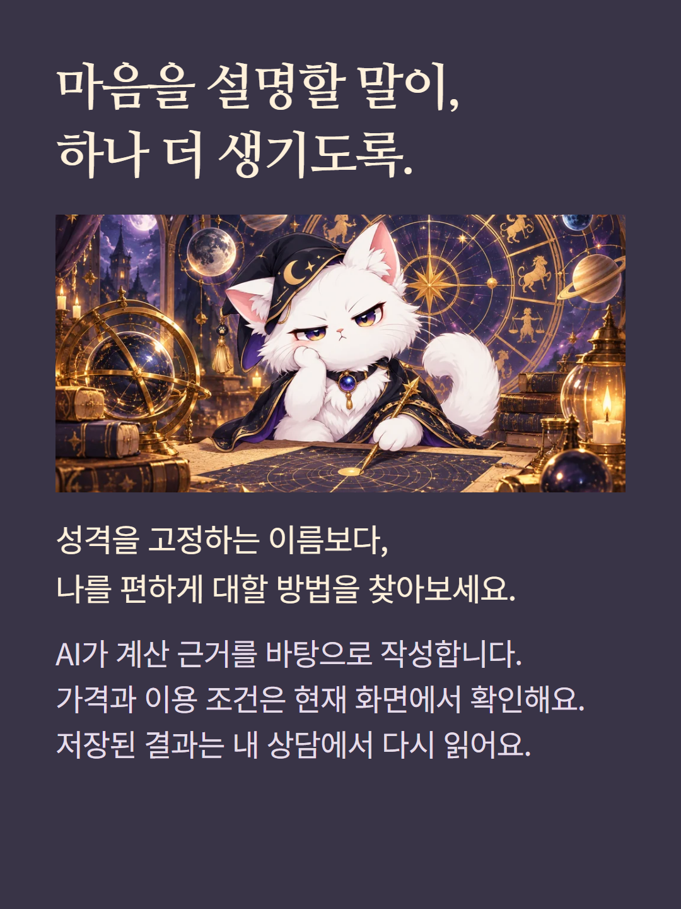

서양 점성술 고등어는 출생 차트의 태양·달·상승점과 행성의 배치에서 일상 질문을 읽는 상담입니다. 자기이해 질문은 6장, 질문 없이 읽는 기본 성향 리포트는 5장으로 다릅니다. 출생시간·지역·시간대가 필요하며, 현재 출생 차트에 실시간 트랜짓은 포함되지 않습니다. 별자리 하나로 성격이나 미래 사건을 확정하지 않습니다. 설명용 사례는 가상 편집이며 AI가 계산 근거를 바탕으로 작성합니다. 가격과 추가 질문 조건은 기존 화면에서 확인하세요.